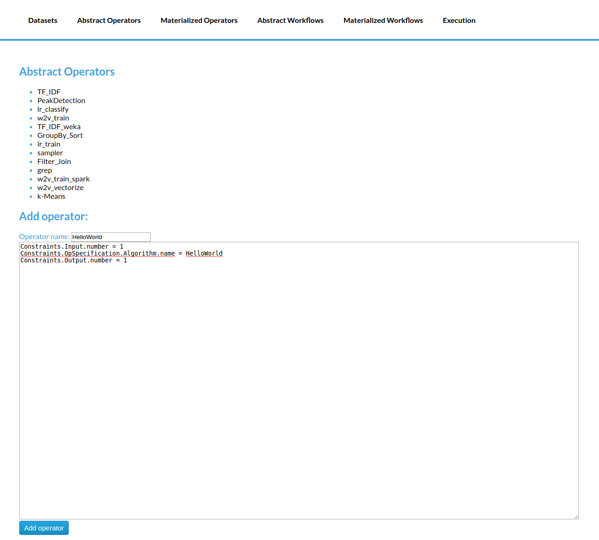
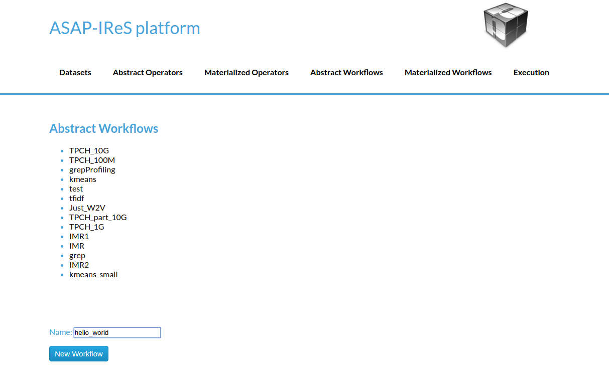
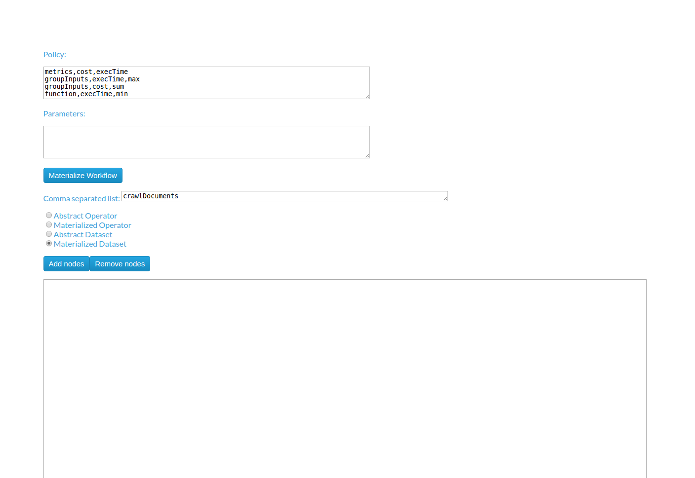
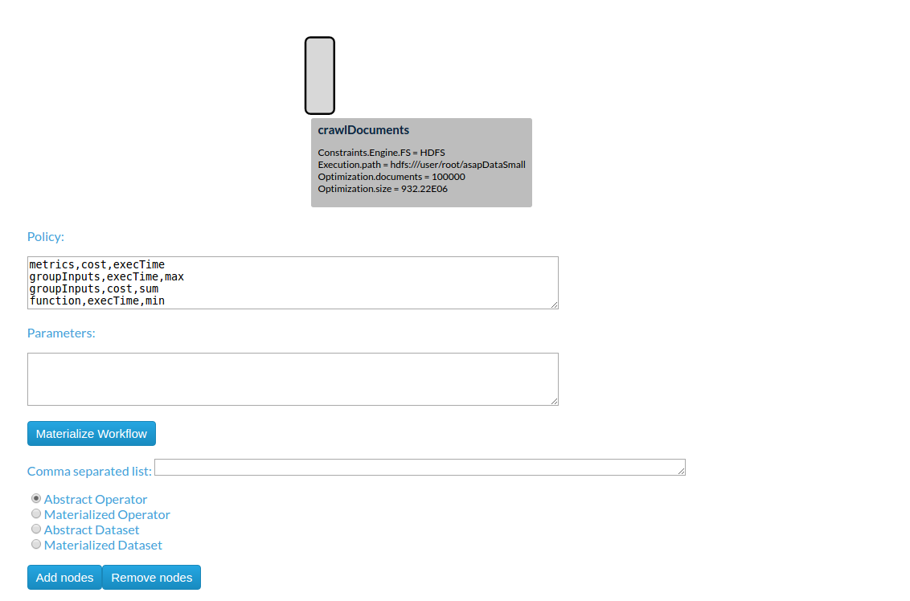
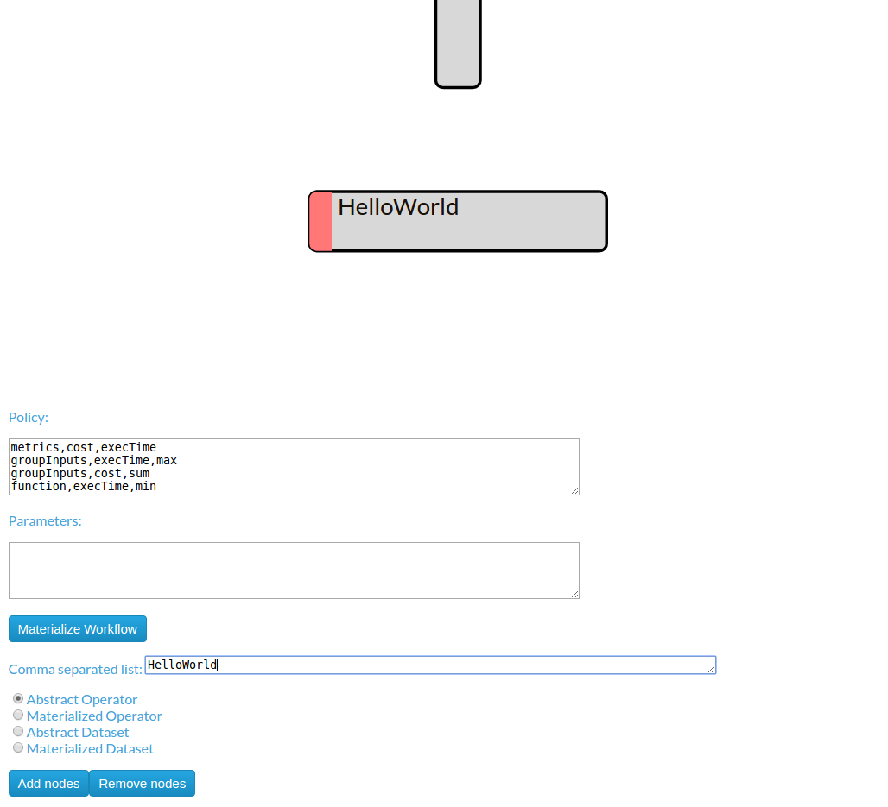
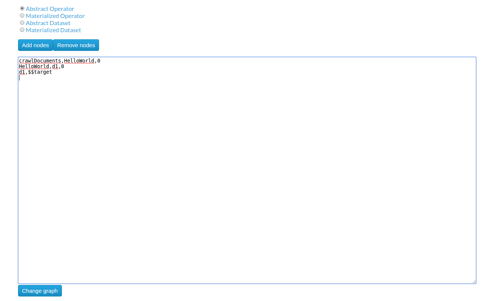
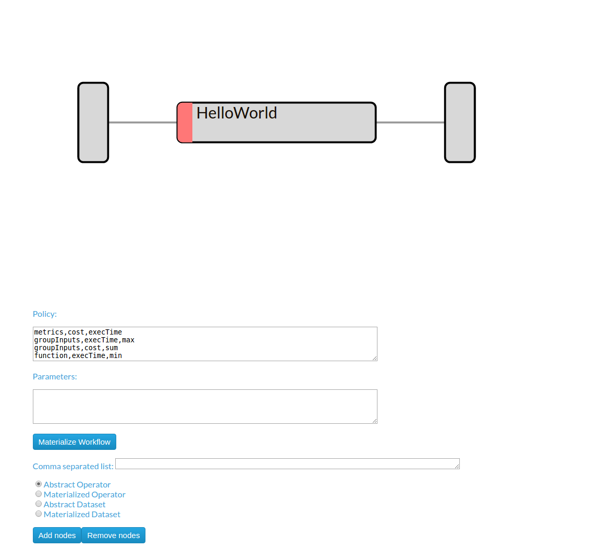

Installation & Deployment¶
Installing IReS-Platform¶
Overview¶
Installation of IRes-Platform requires 3 steps
- Clone IReS-Platform to the server. For a quick reference of how to use git, click here
- Build IReS-Platform project using maven. A tutorial about maven can be found here Maven Getting Started Guide. Update configuration files and folders appropriately.
- Clone: Open a terminal (Linux) or a cmd (Windows) and navigate to a desired directory (create it if does not exist) where IReS-Platform files will be cloned e.g. asap. In the github page of the IReS-Platform, https://github.com/project-asap/IReS-Platform, at the right sidebar, under the label “HTTPS clone URL” the clone url can be found. Copy this url and from inside the terminal execute the command
git clone clone_url
Build¶
For demostration reasons a Linux operating system like Ubuntu it is assumed in this step. In Windows or other Linux distributions the equivalents should be done.
The local home directory of the IReS-Platform project is
IRES_HOME=/home/$USER/asap/IReS-Platform
NOTE:
the “$USER” part of the IRES_HOME corresponds to the currently logged in user it is assumed that the project has been cloned into the directory /home/$USER/asap to refer to the value of IRES_HOME the bash script variable notation is used i.e. $IRES_HOME To build the project use version 3 of maven because the previous version has bugs with jetty and jersey packages. In Ubuntu just execute
sudo apt-get install maven
and confirm the maven version by running
mvn -v.
Then update IReS-Platform pom.xml files to point to the currently installed YARN version.
To do so, the pom.xml file of the asap-platform and cloudera-kitten folders should be updated in order for the Maven to take in account the currently YARN version installed during the building phase. To do so, navigate to $IRES_HOME folder and then
for the asap-platform edit the file $IRES_HOME/asap-platform/pom.xml. In particular, find the line about hadoop.version and between the tags write the version number of the currently installed YARN version e.g. 2.7.1 if the currently installed YARN is hadoop-2.7.1 for the cloudera-kitten edit the file $IRES_HOME/cloudera-kitten/pom.xml. Again, find the line about hadoop.version and write the version number of the currently installed YARN version like before. Then, navigate to the folder $IRES_HOME/panic and build the corresponding project by runninng
sudo mvn clean install -DskipTests
Do the same for the $IRES_HOME/cloudera-kitten folder and ignore the message “BUILD FAILURE” for the moment if that message occur. Now, build similarly the $IRES_HOME/asap-platform folder and ingore again a possible “BUILD FAILURE” message. Repeat the process for the last two folders with the same order i.e. first build $IRES_HOME/cloudera-kitten and afterwards build $IRES_HOME/asap-platform.
In the end of each build you should see a “BUILD SUCCESS” message. The building order of the directories above should be followed.
Apart from the “BUILD SUCCESS” message, you should also see a newly created folder by the name “target” for each of the directories above i.e. cloudera-kitten, panic and asap-platform if it did not already exist.
Update¶
To run asap-server successfully and correctly, two things must be done. The first thing is to define the home folder of the ASAP server. The second one is to copy the cluster configuration files to the corresponding folder of the ASAP server.
–> As for the ASAP server’s home folder, the corresponding file
$IRES_HOME/asap-platform/asap-server/src/main/scripts/asap-server
should be updated. In this file the variable “ASAP_SERVER_HOME” should be assigned the path of the folder “asap-platform/asap-server/target” and thus under the line
#IRES_HOME=/path/to/IReS-Platform_project
set the IRES_HOME=
to your custom IRES_HOME e.g.
IRES_HOME=/home/$USER/asap/IReS-Platform
Notice that the folder “$IRES_HOME/asap-platform/asap-server/target” has been created during the building phase.
–> As for the cluster configuration files, it is assumed that a YARN( or Hadoop 2.0) cluster is already set up and that YARN can be found for example in
YARN=/home/$USER/yarn
Copy the $YARN/etc/hadoop/core-site.xml and $YARN/etc/hadoop/yarn-site.xml files into the $IRES_HOME/asap-platform/asap-server/target/conf directory. Finally, the yarn-site.xml must have a minimum set of properties in order for the IReS-Platform to work correctly. This minimum set of properties can be found in resources/conf/yarn-site-min.xml file of this repository. Similarly for the core-site.xml file there is a core-site-min.xml into the same folder.
Running the HelloWorld workflow¶
The HelloWorld is a simple workflow constists of just a single operator, designed for demonstration purposes. To run the HelloWolrd follow the next steps:
- Go to IReS UI: http://localhost:1323/web/main
IReS Home Page
- Go to the Abstract Workflows tab and select the HelloWorld workflow
Abstract Workflows Tab
- Then click on Materialize Workflow button
Abstract HelloWorld Workflow
- Click on the Execute Workflow button to start the execution
The materialized HelloWorld workflow
In the figures below we can see the execution process
{kind=link}
The execution has been started
{kind=link}
The submitted YARN application
{kind=link}
The execution has been finished
Create a new workflow from scratch¶
In this section we describe the process of design a new workflow from scratch.
1. Creating Abstract Operators¶
In order to create a new workflow the definition of the abstract operators is needed. To define the HelloWorld abstract operator go to the Abstract Operators tab and enter the operator description in the text box. To create and save the new abstract operator click the “Add operator” button.
{kind=link}
2. Creating Materialized Operators¶
Currently, to add a materialized operator a folder with the least required files is needed.
- From the bash shell, go to the asapLibrary/operators folder in the IReS installation directory.
cd $ASAP_HOME/target/asapLibrary/operators
- Then, create a new folder named with the new materialized operator’s name.
mkdir HelloWorld
- Create the description file and enter the information below
$ nano description
Constraints.Engine=Spark
Constraints.Output.number=1
Constraints.Input.number=1
Constraints.OpSpecification.Algorithm.name=HelloWorld
Optimization.model.execTime=gr.ntua.ece.cslab.panic.core.models.UserFunction
Optimization.model.cost=gr.ntua.ece.cslab.panic.core.models.UserFunction
Optimization.outputSpace.execTime=Double
Optimization.outputSpace.cost=Double
Optimization.cost=1.0
Optimization.execTime=1.0
Execution.Arguments.number=1
Execution.Argument0=testout
Execution.Output0.name=$HDFS_OP_DIR/testout
Execution.copyFromLocal=testout
- Create the .lua file with the execution instructions
operator = yarn {
name = "Execute Hello world",
timeout = 10000,
memory = 1024,
cores = 1,
container = {
instances = 1,
--env = base_env,
resources = {
["HelloWorld.sh"] = {
file = "asapLibrary/operators/HelloWorld/HelloWorld.sh",
type = "file", -- other value: 'archive'
visibility = "application" -- other values: 'private', 'public'
}
},
command = {
base = "./HelloWorld.sh"
}
}
}
- Create the executable
$ nano HelloWorld.sh
#!/bin/bash
echo "Hello world" >> $1
- Restart the IReS server
$ $IRES_HOME/asap-server/src/main/scripts/asap-server restart
3. Creating the Abstract Workflow¶
Now we will combine everything we created in the above steps to generate the new workflow. Go to the Abstract Workflows tab and click the “New Workflow” button.
{kind=link}
Then we add the workflow parts one-by-one. First we add the crawlDocuments dataset from the dataset library. Select the Materialized Dataset radio button and enter the dataset name in the Comma seperated list text box. Then click the Add nodes button to add the dataset node to the workflow graph. Repeat this step to add an output node with name d1. Just enter the name d1 to the text box and click the Add nodes button.
 {kind=link}
{kind=link}
Add the HelloWorld abstract operator to the workflow. Select the Abstract Operator radio button, enter the operator’s name (HelloWold) in the text box and click again the Add nodes button.
{kind=link}
Describe the workflow by connecting the graph nodes defined in the previous steps as shown in the figure bellow and click the Change graph button.
{kind=link}
In the figure bellow we can see the generated Abstract Workflow. Now click the Materialize workflow
{kind=link}
The resulting materialized workflow